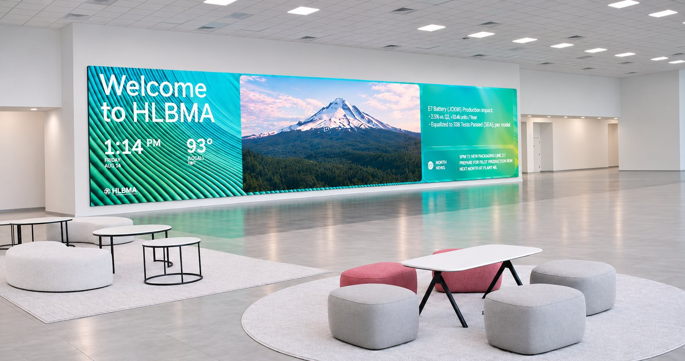
HLBMA / Large-Format Display
Welcome to my portfolio, there are many like it, but this one is mine. It is an archive of my creative thought as much as it is a love letter to craft. Should you be so inclined, I would encourage you to get lost... the devil is in the details :)

HLBMA / Large-Format Display
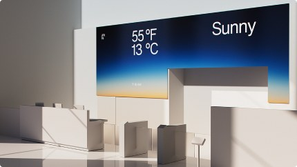
JFK Terminal 6 / Generative System
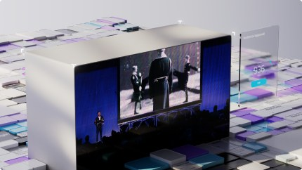
DDD Universe / Interactive Installation
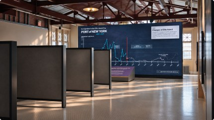
Ellis Island Museum of Immigration / Museum Installation
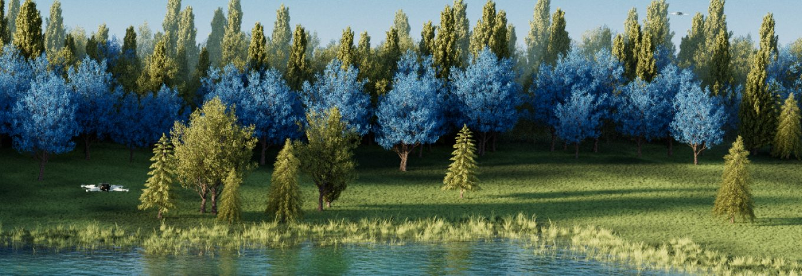
AT&T 5G Theatre / Immersive Experience NDA
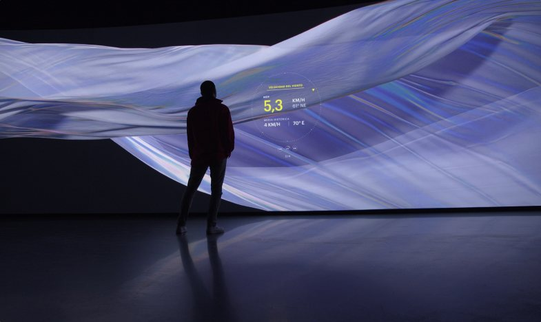
Torre Glòries / Interactive Data-Viz
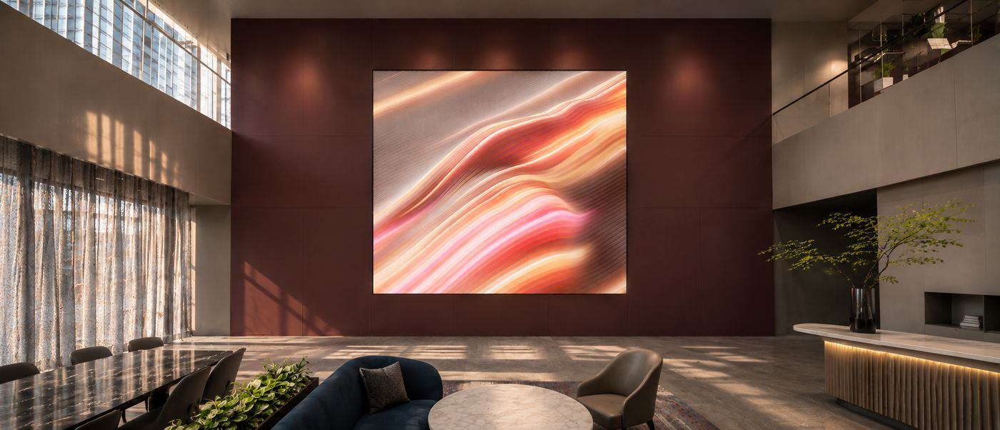
Wells Fargo T1 Screens / Large-Format Display
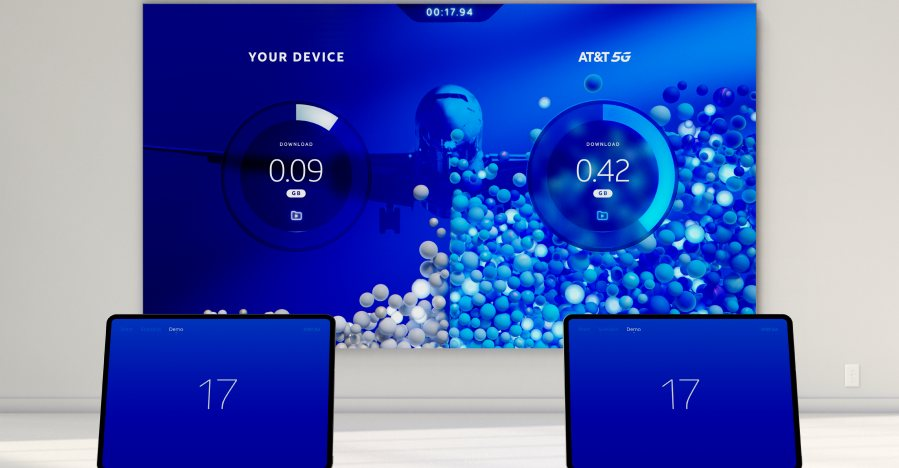
AT&T 5G Speed Test / Interactive Data-Viz NDA
Warner Media Lobbies / Generative System
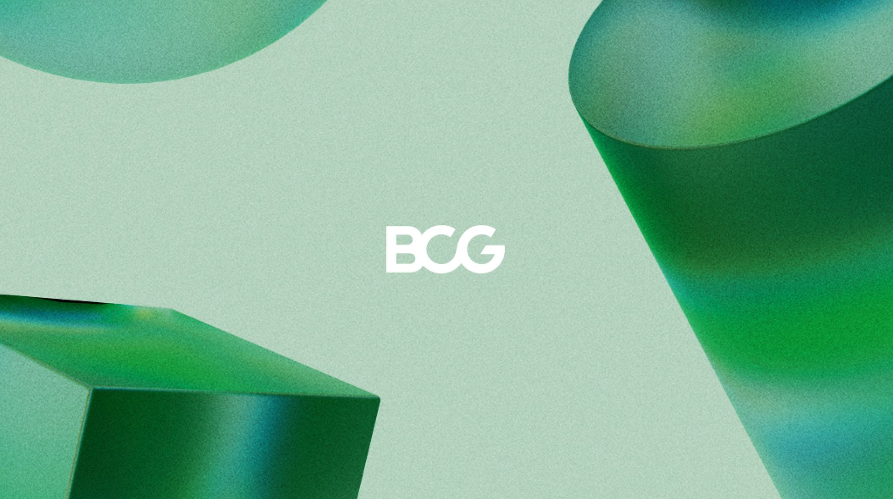
BCG / Motion System
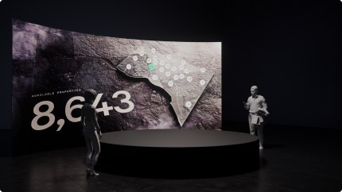
CBRE / Data Visualization
Google / Interactive Website NDA
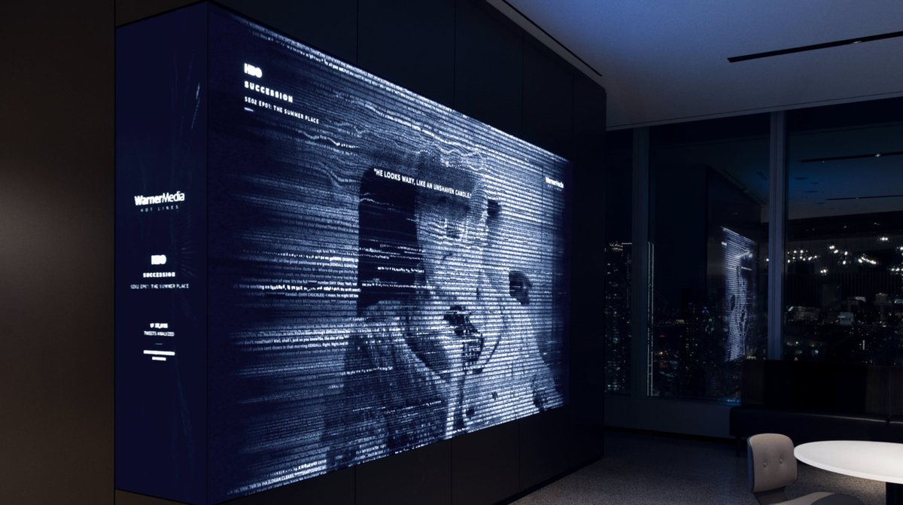
Warner Media—Hotlines / Generative Experience
YouTube RELEASED / Mnemonic
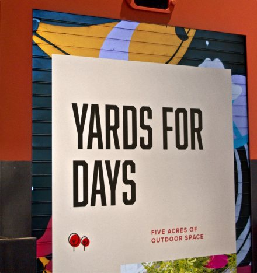
Industry City / Wayfinding
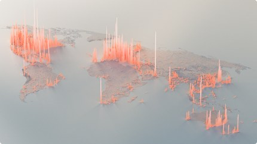
Marriott Bonvoy / Data Visualization
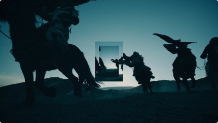
National Geographic / Rebrand
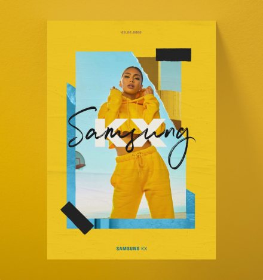
Samsung KX / Interactive Retail Installation
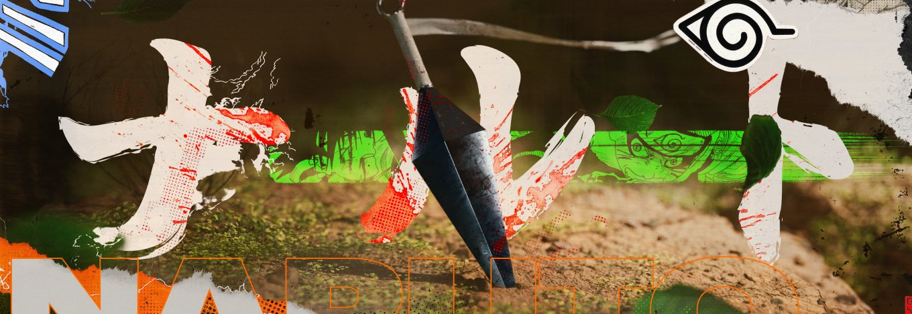
Childhood Memories / Styleframes WIP